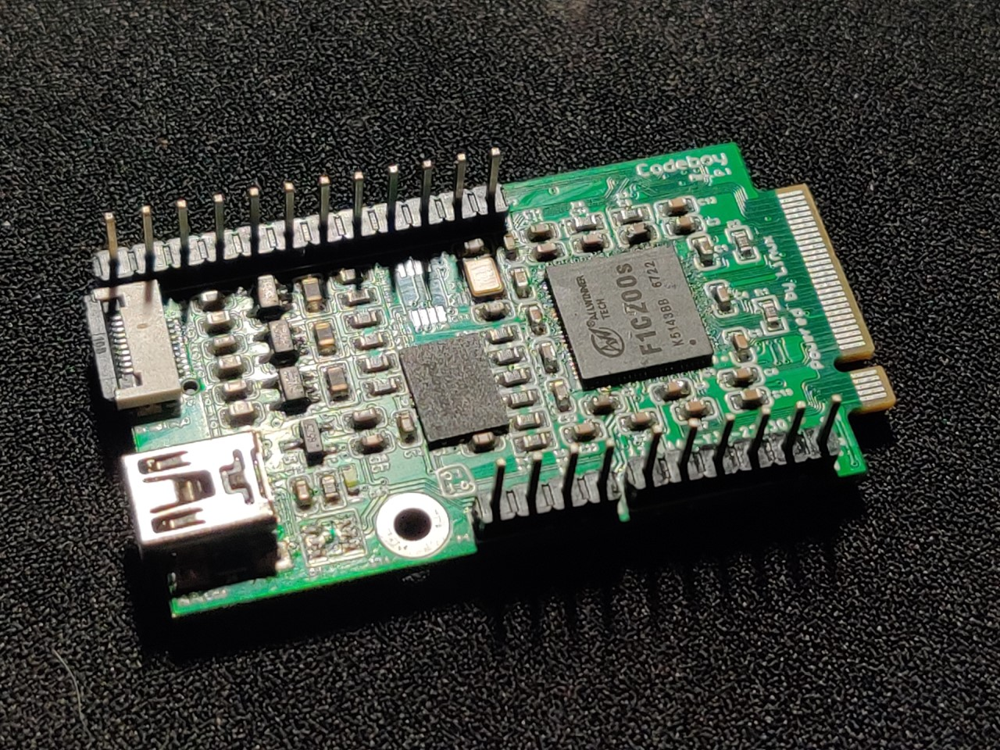
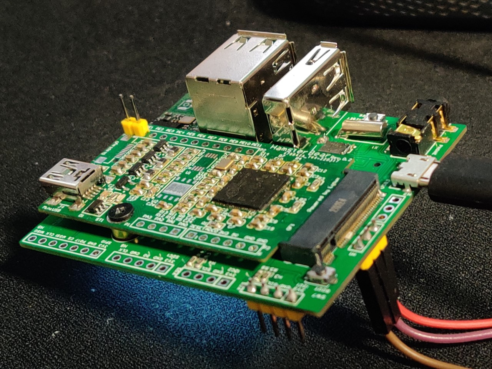

(这里放一张接口定义图)
上手教程
介绍
HamsterBear 主板一块
HamsterBear 拓展底板一块
USB转串口模块 一个
MiniUSB线一根
固件镜像
这里有提供编译好的如下镜像文件 - boot.scr （待添加） - uboot.bin （待添加） - dtb （待添加） - zImage （待添加）
文件系统暂时提供如下几个： - buildroot （待添加） - debian （待添加）
打包好可直接烧录的镜像: - nand flash （待添加）
- tf 卡 （待添加）
设备的连接
在只有核心板的情况下MiniUSB接口既作为供电也作为OTG使用，串口使用UART0，需要通过杜邦线连接
在连接到底板后，底板MicroUSB接口仅作为供电，串口使用UART1调试，也可通过ssh调试。
串口debug打印信息
将串口转USB模块按如下示意图连接到开发板 RXD -> UART0_TX TXD -> UART0_RX
打开串口调试工具，这里以MobaXterm为例
点击新建Session，选择Serial，选择Serial Port，设置波特率为115200 bps
点击Advanced Serial Settings选项卡，将Flow Control设置为None，点击Ok
交叉编译程序拷贝调试方法
这里提供了三种方法，供参考： 1. 串口 2. USB 网络调试 3. WLAN 网络调试
如上三种发放都可以用来调试设备，各有优缺点，下面简单说下：
- 串口
使用串口调试时，主要用过lrzsz库通过Z-modem协议来进行文件的传输，优点是方便，缺点是速率受串口波特率限制，假设串口波特率为115200 kbit/s，去掉uart起始位，校验位，z-modem可能还有校验机制，一秒大概能传输不到10KB。
所以如果目标文件大小几十KB的话，可以用此种方式调试。
- 网络
使用USB或WLAN网络调试，其实都是通过scp和nfs等来进行调试的，优点是速率快，缺点是需要待网络配置好后才能使用。
对于稍大点的程序，几百KB~几十MB，推荐用此种方法调试。
串口调试
默认的设备树中 UART0 复用到如下管脚：
PE0: UART0_RXPE1: UART0_TX
如果连接了底板，还可使用UART1、UART2，复用如下：
PD3: UART1_RX-
PD4: UART1_TX -
PD14: UART2_RX PD13: UART2_TX
USB调试
当你只有核心板的时候，可以使用这种方法来调试设备

按照如下博客中的流程配置好环境： https://www.cnblogs.com/hfwz/p/16053528.html (rootfs章节)
WLAN 网络调试
当你搭配了底板之后，可以使用这种方式来调试设备

按照如下博客中的流程配置好环境：
https://www.cnblogs.com/hfwz/p/16168087.html (启动系统后章节)
USB或WLAN网络下的调试方法
对于单个文件
# 主机端
scp ./demo root@192.168.31.76:/root/
# 设备端
./demo
对于目录
# 主机端通过nfs导出某个目录
可参考如下文章，安装并配置NFS服务章节
http://wiki.100ask.org/Configuring_ubuntu
# 设备端挂载nfs
mount -t nfs -o nolock,vers=3,port=2049,mountport=9999 192.168.31.196:/home/huazheng/nfs_rootfs /mnt
````
#### 调试方法
```shell
# strace 查看系统调用，文件io等
strace ./demo
# ldd 查看使用到的.so文件
ldd ./demo
# nm 查看符号表
nm ./demo
# gdb 调试程序
gdb ./demo
(gdb) list 7 # 显示第7行附近的代码
(gdb) b 7 # 在第7行设置断点
(gdb) r # 运行程序
(gdb) backstrace # 可查看程序崩溃栈